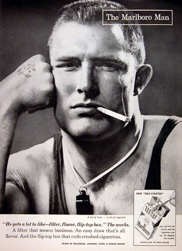

Marlboro
 De: La Frikipedia, la enciclopedia extremadamente seria.
De: La Frikipedia, la enciclopedia extremadamente seria.

|
Este artículo participa del Certamen de Adopción, así que mientras tenga esta plantilla no lo toques porque sino este gatito se enojará contigo.
|
De la serie botánica para todos:
| Nombre común:
|
Marlboro
|
| Nombre científico:
|
Cancerígenus Tubillus.
|
| Especie:
|
Cilíndrica Reprodictoria.
|
| Subespecie:
|
Marlboro Light o Box.
|
| Clima:
|
Aire Limpio por contaminar.
|
| Zonas en las que se da:
|
En la calle, ya se prohíbe en sitios públicos.
|
| ¿Es comestible?:
|
No, más bien fumable, respirable y enfermable.
|
| ¿Es fumable?:
|
Más que la marihuana en sí.
|
| Morfología (para el que sepa que es esto):
|
Cilíndrico y largo...
|
| Finalidad de su existencia:
|
Se los creyó extintos, pero hay más que los pokémon.
|
Marca de cigarrillos, originalmente para mujeres, concebida a su vez por otra conocida marca de cigarrillos llamada "Filip Morí", la cual vio por primera vez el mundo a principios del año 1924, año de la segunda profecía del fin del mundo.
En esa época en la que el ambiente era un poco más sano y el aire no apestaba a cloaca de servicio sanitario, el Cowboy multimillonario alemán llamado Juan del Crucifijo Giles (un nombre muy alemán), lo anunció como un tabaco para mujeres que se cagaban en todos a su alrededor y fumaban como millonaria sin escrúpulos.
El nombre de esta mierda marca proviene de una callejuela de mala muerte llamada "Greit Marlboroughi", en Vieja Jersey, ciudad del país que se come al mundo de a poco.
De momento, y desgraciadamente para algunos, Marlboro es la marca más vendida de todo el mundo, desde enfermos de cáncer terminal, hasta recién nacidos en incubadora (véase "Marlboro Kids").
Además, su logotipo es mundialmente conocido gracias a los rancheros que quemaban a sus caballos con el mismo, para darse a conocer, y a famosísimos corredores de Fórmula 1 que no serán mencionados en este artículo, por respeto de la ley de derechos de autor.
La concientización y Marlboro Man
Gracias a Dios, los seres humanos recapacitan. Tarde, pero lo hacen. Un ejemplo de esto fue en el año 1957, 33 años luego de que el famoso palillo de cáncer viera este mundo.
Una revista, grupo o no se recuerda qué mierda organizada, comenzó a concientizar a la población sobre los desastrosos (y obvios) efectos del tabaco hacia la salud humana.
Debido a que la comunidad fumadora era consiente sobre el cáncer, sobre la falta de apetito y la diarrea crónica, las ventas de la empresa diabólica Marlboro se fueron al garete entre 1957 y 1958. Los registros afirman que estos fueron los únicos dos años en lo que va de la historia, en los que las ventas de la empresa no fueron satisfactorias.
Por esa razón, el mismo año en el que se les fue todo a la mierda, la empresa de grisines de nicotina creó un personaje llamado "Marlboro Man".
El mismo representaba a un vaquero con pelos en el pecho, músculos hasta en los párpados y ropa que daba a entender que caería al suelo con la más mínima brisa. Se mostraba al sujeto en cuestión, total armonía con la naturaleza, sólo que con un canuto de 10 centímetros enchufado en la boca, para indicar que fumar lo hacía a uno sentirse macho y a la vez, liderar los instintos salvajes que todo hombre lleva dentro.
Por supuesto, olvidándose de la mujer que lo lleva en su cartera, los publicistas lanzaron esta bomba al mercado, la cual dio los frutos deseados: miles de personas consumiendo cáncer en filtro, pero viéndose más cool que quienes cuidaban la salud.
Controversia publicitaria
 Muchos hombres dieron su vida literalmente para parecerse a él.
Tres de los hombres que aparecieron en los comerciales de Marlboro Reds, murieron de cáncer de pulmón tras fumar de esta misma serie de la marca, por lo que esos cigarrillos se ganaron el nombre de "Asesinos de Vaqueros" en el mercado.
Por supuesto, no se los retiró y el público puede seguir ingiriéndolos si los consigue en el mercado negro del humo de lefas.
Por esa razón, Marlboro declaró que ninguno de esos tres fiambres fue parte de sus campañas publicitarias, quedando en vergüenza luego de que les hackearan la Pentium 4 y se descubrieran fotos de esos hombres fumando puros junto a Marlboro Man y el director de la compañía.
Además de eso, muchas personas dijeron sentir "malestar estomacal" debido a la burda creencia de que fumar hacía mejores a las personas, tanto atléticamente como en la cama. Muchas publicidades rezaban frases en las que el hombre que no se encastaba un Marlboro, no era un hombre, sino un niño.
Debido a esta horrorosa campaña, muchos niños fueron degollados por hombres, por miedo a perder la masculinidad si no se unían a la fumadera. La empresa por otro lado, siguió vendiendo alegremente su mierda a cualquiera que la pidiera, tuviese edad para consumirla o no.
Variedades
El paraíso de todo fumador empedernido.
Debido a su gran éxito, más que la marca que lo introdujo en el mercado fumador, Marlboro sacó muchas variedades diferentes de palillos cancerígenos para todo el mundo. Unos ejemplos pueden ser:
- Reds (Rojos) o conocidos como "Killers" (Asesinos): Hechos principalmente para vaqueros en el oeste. Según campañas publicitarias, este cigarrillo sentaba bien al fumarse sobre un caballo y lanzar las colillas en la paja. Muchas granjas y hectáreas se incendiaron en esa época.
- Medium (Mediano): Para ver espíritus mientras uno se lo fuma. Se decía que con el humo de estos puchos se formaban los rostros de personas misteriosas en el aire, o incluso el usuario podía formar donas de humo al lanzárlos por ahí.
- Menthol (Mentolados): Para enfermos de alitósis. Aunque la menta se sentía bastante, nunca fueron suficientemente fuertes como para apartar el olor nauseabundo que soltaba el humo, y mucho menos del aliento de muerte de la persona.
- Menthol Light(Mentolados Suaves): Para activistas de Green Peace. Estos estaban en contacto con la naturaleza, ya que la menta es más suave que su predecesor y el humo tenía un tufillo que recordaba a la flora y a la fauna incendiándose.
- Light Gold (Suaves, Dorados): Para millonarios fetichistas del oro. Este cigarrillo tenía en partícular dos rayas de oro cerca del filtro, para destacar de entre las otras marcas de mierda que rondaban.
- Ultra Light Silver (Ultra Suaves, Plateados): Para gente de segunda, que no puede comprarse un atado de Gold. Traía dos marcas de plata cerca del filtro, pero su humo no era tan extravagante como el primero, por lo que debía fumarse en bares y no en pubs.
- Milds Dark Blue (Suaves, Azul Oscuro): Para aquellos que sienten la melancolía en cada pitada. Preferidos por adolescentes con tendencias suicidas, pero no lo suficientemente enfermos como para rebajarse a Emo. Su olor recuerda al cajón de un muerto.
- Flavor Plus (Plus de Sabor): Para quitarse el mal sabor de boca, vaya uno a saber por qué...Preferido por los amantes o por personas que salen de un hotel a las seis de la mañana.
Un paquete de Marlboro Black Menthol fumándose a sí mismo.
- MX4 Flavor Medium (Mierda x 4, Medianos): Para gente de mediana estatura, con mierda incluida en cada bocanada de humo. Es conocido también por ser el cigarro más corto de la historia, pero con el olor más penetrante jamás olfateado por el hombre.
- Virginia Blend: Conocida por ser la gama que más se produce en el mercado. Principalmente señalada como la "pudre cosas" dado que el olor de su humo de muerte se impregna en la ropa, los muebles, animales e incluso en el agua.
- Black Menthol, Japan Only (Menta Negra, sólo Japón): Una mierda exclusiva para los japoneses. No se sabe mucho de este, sólo que su menta es tan fuerte que obliga a que la gente se eche atrás, tal vez por respeto o por asco extremo.
- Marlboro MST, Moist Smokeless Tobacco (Menos humo de tabaco): Un churro de nicotina que promete echar menos humo de la muerte que sus predecesores. Principalmente suele cumplir su promesa, pero sólo visualmente, debido a que el olor característico a comida mezclada con cenizas persiste en el aire como un okupa.
Se cree que hay muchas más variedades ocultas y exclusivas, como la de Japón, la cual fue conocida debido a que el emperador salió en televisión pública sin darse cuenta, mientras se fumaba un Black Menthol junto a sus hijos de 6 y 4 años.
Declive
En muchos países, un poco más inteligentes que otros, muchas publicidades de Marlboro junto con las
Las campañas anti-tabaco no se andan con rodeos, van directamente a lo importante.
de Marlboro Man, ya son consideradas parte del pasado, junto a las miles de millones de vidas que arrastraron consigo mismas, debido a las gloriosas campañas anti tabaco.
Se realizó un documental denominado "Los que cagaron en el Oeste", centrándose sobre la industria de los puchos y los comerciales en los que se celebraba y se glorificaba el imundo acto de fumar (aunque no se especificó qué era lo que se fumaba).
Filip Morí demandó a los justos cineastas y el documental fue retirado del mercado, quedando todas sus copias en el más absoluto de los secretos de infantes. Sin embargo, en 1983 un desconocido profesor de una universidad del lomo del culo, presentó la película en un canal de televisión, la cual luego fue conocida por todo el mundo.
A pesar de eso, y de que a la empresa le importó un carajo parar la distribución de enfermedades respiratorias y otras mierdas, la gente consiente continuó con las campañas para frenar la obvia reproducción de malestar entre sus usuarios.
Curiosidades
Cigarros aquí, cigarros allá, un cáncer te saludará.
- Se dice que si uno se fuma un Marlboro frente a alguna empresa de la competencia, la persona en cuestión será inmolada y prensada en nicotina.
- Marlboro Man jamás murió, solo los que lo personificaron.
- Aún hoy en día, los jóvenes iniciados en el arte de fumar cáncer siguen haciéndolo para verse "cool" ante sus pares.
- Se cree que tras las publicidades de My Little Pony hay ocultos millones de mensajes subliminales de empresas de tubos nicotínicos, entre ellas, Marlboro.
- Es mucho más fácil liarse un porro que un Marlboro.
- Hay una creencia de que si alguien se encanuta todas las gamas de Marlboro en orden de salida al mercado, se convertirá en el nuevo Marlboro Man.
- En Argentina hay problemas con el nombre de la gama de Marlboro Box, debido a que por problemas de habla, se le llama "Malboro Vos".
- Otra creencia circula, indicando que si se juntan todas las colillas de Marlboro del planeta con el valor un centavo, se acabaría el hambre mundial.
- Activistas afirman que un sólo tubo de entre millones, tiene Marihuana en vez de Nicotina.
- Si el diseño de Marlboro es observado verticalmente, se distingue una gran letra "K". Esta letra puede ser vista hasta 3 veces en el mismo paquete, por lo que tendríamos un total de tres "K". "KKK", eran las letras del clan racista "Ku Klux Klan".
- También hay otra cosa (que seguramente un drogadicto descubrió) y es que si se pone al logotipo boca abajo, la letra "M" simula a un hombre negro colgado y la conjunción de la "L" y la "B" son los pies de otro que lo mira aterrado.
Observe la importancia que le dan los consumistas a las leyendas de las cajas.
- Ya se sabía de sobra que los de Filip Morí y Marlboro son racistas, por lo que hay un grupo de gente que dice que los cigarrillos son como ellos: Blancos y puros por fuera y negros como la mierda por dentro.
- En el famoso desfile del Día de Gracias en gringolandia, puede verse hoy en día un enorme globo alargado que representa a un cigarrillo de Marlboro, entre los personajes para niños.
- Cuando se incitó a las empresas de churros cancerígenos a que colocaran propagandas contra el consumo de cigarros en sus cajetillas, Marlboro fue la primer empresa de todas en jurar venganza por semejante difamación.
- Sin embargo, las impactantes imágenes de sufrimiento parecen importarle tres mierdas a los consumidores, que siguen fumando como chimeneas en días de frío.
 Biología Biología
|
Rarezas biológicas inclasificables
|
Autor(es):
- Fordus
- Dark temptation
- 62666
- RAPSODIA95
- Gñapero Solitario
- Aixa
- Likan003
- Sir Lancebot
Frikipedia 2005-2016, Licencia
GFDL 1.2 - Extraído por FrikiLeaks